Conceito
Definição de território criativo, mensagem e tom de voz antes da produção. É a base estratégica que orienta todas as decisões seguintes.
Direção criativa, produção audiovisual e social media. Conduzo o conteúdo do conceito à publicação, com foco em retenção, identidade de marca e resultado.
Comunicar é deixar sua marca. Cada projeto parte de um objetivo claro; conceito, direção e edição vêm depois, sempre a serviço do resultado.
Trato redes sociais como canal de relacionamento e performance, não como vitrine. Cada peça cumpre uma função: gancho nos primeiros segundos para retenção, copy adequada ao público e métricas claras para leitura de resultado. Qualidade de imagem é premissa, não diferencial isolado.
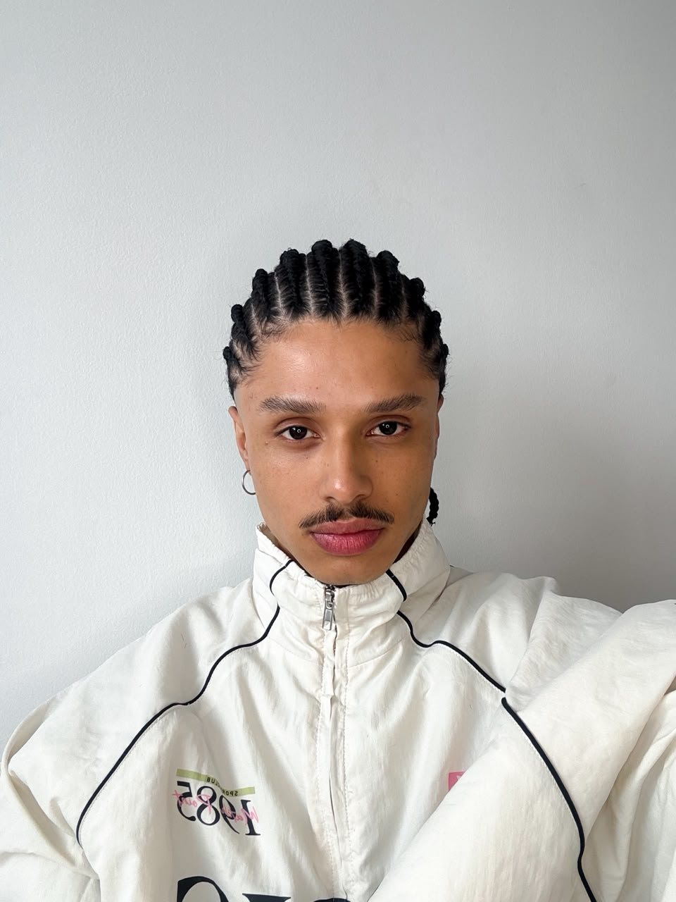
Creator MakerKaique Augusto, também conhecido como Kaique Fontiny. Designer gráfico formado pela UNIP, com atuação em social media, direção criativa e produção audiovisual. Uno a base visual do design à produção de vídeo curto e à gestão de conteúdo em um mesmo fluxo de trabalho. Complementei a formação com os cursos de Gestão de Social Media e Marketing de Conteúdo pela Rock University.
Meu processo vai do briefing à análise pós-publicação: roteiro, captação, edição, redação de copy e leitura de métricas para calibrar as próximas entregas. Atuo de forma colaborativa, próximo do público, com testes e ajustes contínuos orientados por dados.
Direção com intenção e leitura de dados. Todo conteúdo nasce de um conceito e é medido por resultado.
Um método que integra pesquisa, direção e análise de desempenho, para entregas consistentes em estética e resultado.
Definição de território criativo, mensagem e tom de voz antes da produção. É a base estratégica que orienta todas as decisões seguintes.
Referências visuais, roteiro, decupagem e direção de cena. Traduz o conceito em linguagem audiovisual com identidade consistente.
Definição de formato, canal e calendário editorial conforme a jornada do público, da retenção inicial à conversão. Cada peça cumpre uma função no plano.
Captação, edição, color grading e finalização. Produção ágil, inclusive em tempo real para eventos, sem abrir mão do acabamento.
Planejamento e produção de conteúdo para redes, com calendário editorial, adaptação de copy por canal e acompanhamento de métricas de engajamento.
Conceito, direção de arte e direção de cena para campanhas, do desenvolvimento da ideia à execução visual com identidade própria.
Roteirização, captação e edição de vídeo curto para Reels, TikTok e Shorts, com foco em retenção e ritmo narrativo.
Cobertura audiovisual de eventos e festivais em tempo real, com produção ágil de stories e conteúdo publicado durante o evento.
Design gráfico e construção de identidade visual, garantindo consistência da marca em todos os formatos e pontos de contato.
Curadoria de tendências, adequação de linguagem por plataforma e planejamento orientado a comunidade e crescimento de audiência.
Seleção de projetos em beleza, varejo, tecnologia e cultura. Direção, captação e edição próprias em cada entrega.
Ver conteúdo no Instagram →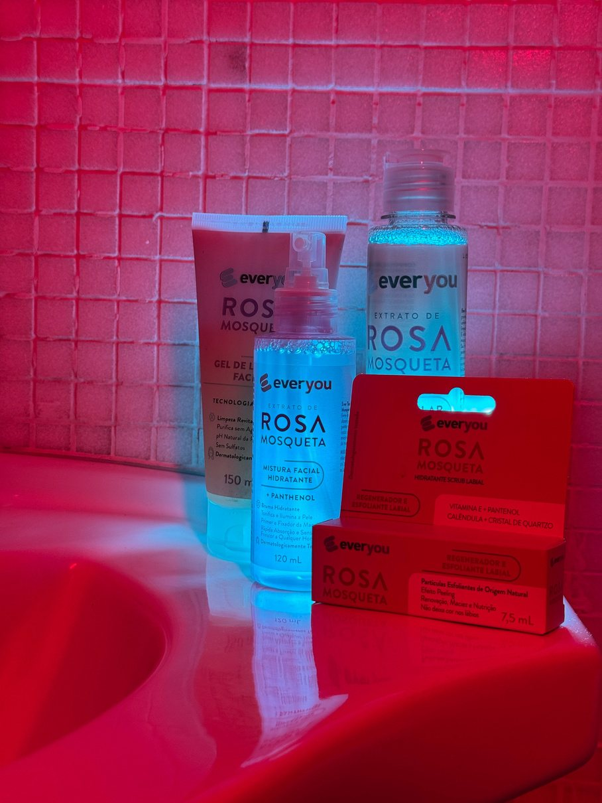
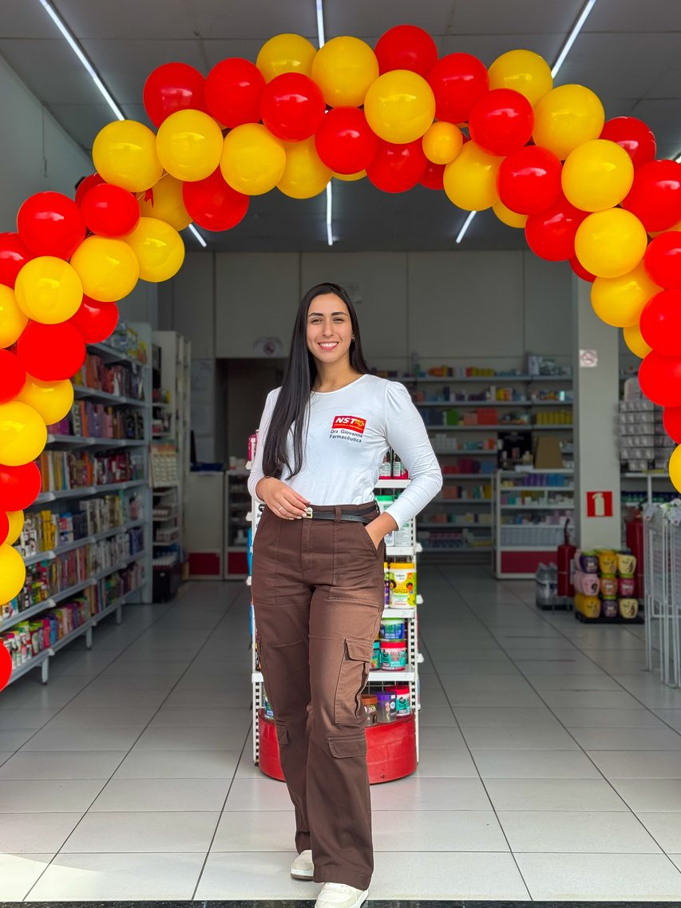
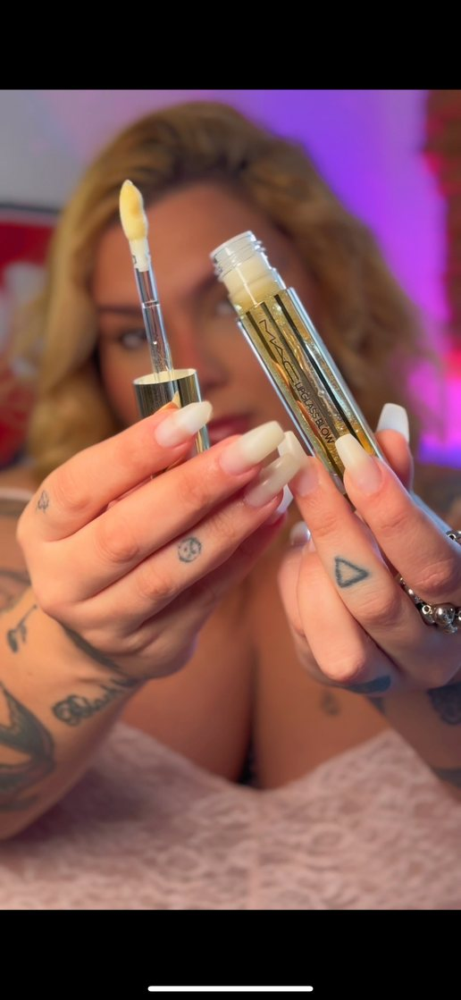
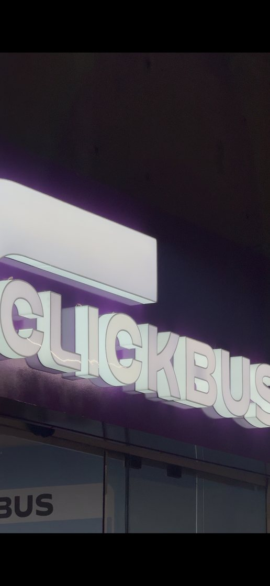
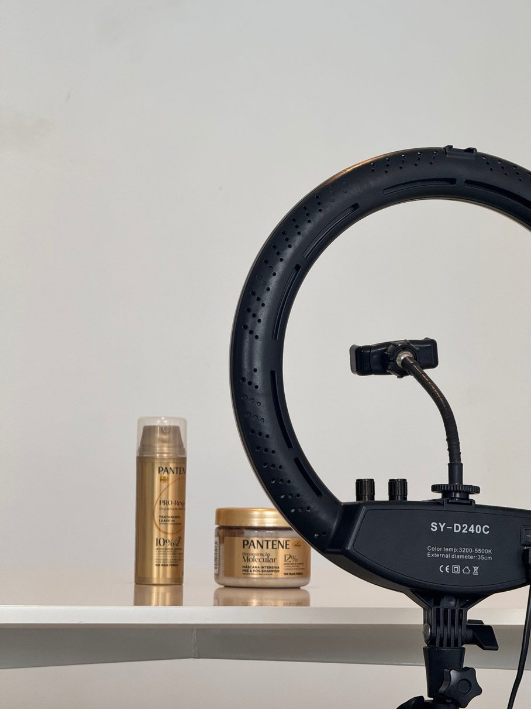
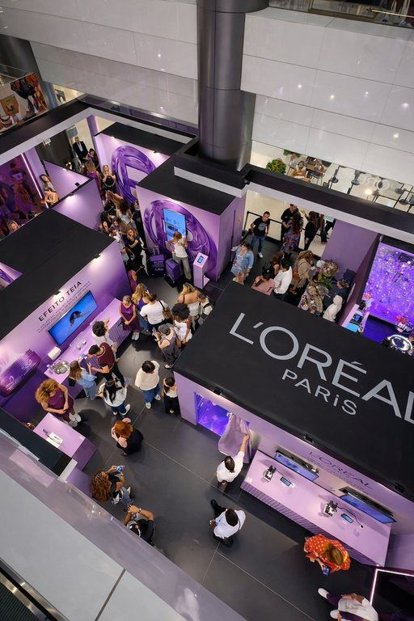
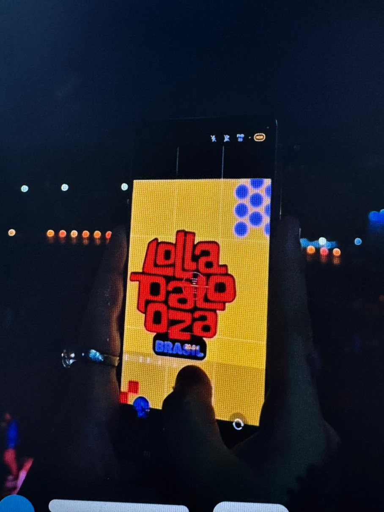
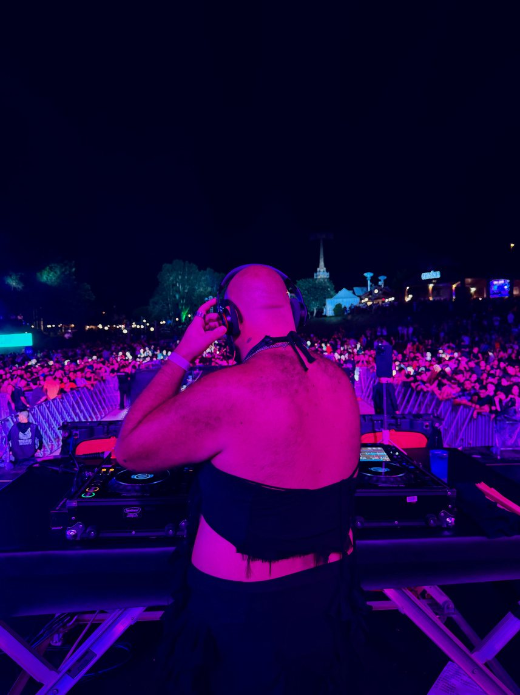
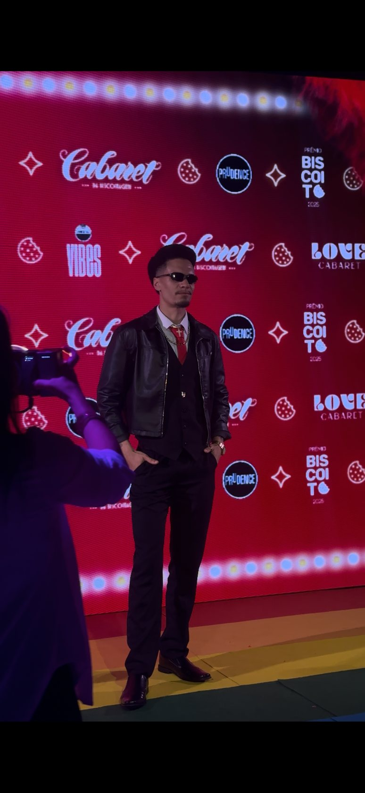
Direção, captação e edição de vídeo curto no formato vertical. Toque no vídeo para ativar o som.
Direção criativa para publicidades e perfis, captação e edição, conteúdo em tempo real, pós-produção, videomaking e color grading.
Captação, edição e divulgação de conteúdos audiovisuais de eventos e ações institucionais.
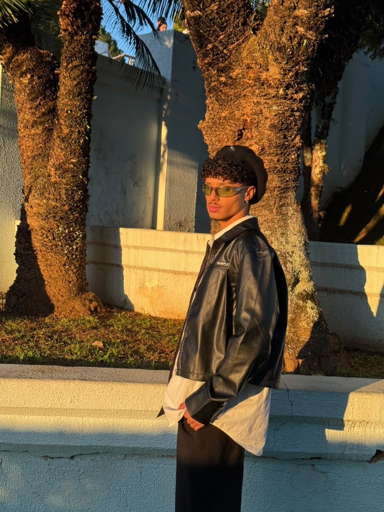
Atuo em toda a cadeia da comunicação digital: da definição de conceito e mensagem à captação, edição e análise de resultados. Reúno repertório de design gráfico, domínio de produção audiovisual e leitura de métricas em um mesmo profissional.
Dirigi, captei e editei conteúdo para marcas de beleza, varejo, tecnologia e cultura, entre elas L'Oréal Paris, Pantene, Drogaria São Paulo, everyou, Samsung, Absolut e ClickBus. Cada projeto envolveu direção, captação, edição e adequação de linguagem por canal.
Trabalho bem em fluxos com influenciadores e equipes de criação: briefing de creators, curadoria de UGC, cobertura em tempo real e alinhamento de timing de campanha, com foco em converter audiência em resultado.
Disponível para colaborar com marcas e agências que valorizam consistência visual, agilidade de produção e decisões orientadas por dados.
Baixar currículo (PDF) ↓